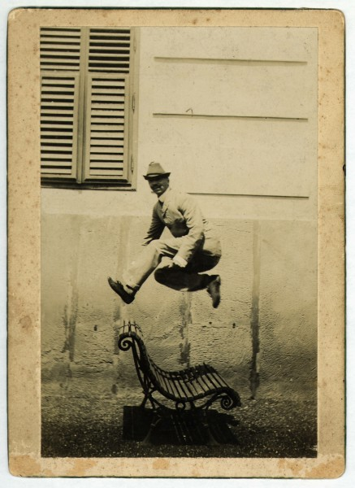

YOUTH ENGAGEMENT VIA SOCIAL MEDIA BY GLAMs DURING THE PANDEMIC
Actions per tool
Let’s have a look at youth engagement practices, organised by cultural institutions, that took place during the pandemic on Social Media platforms.
The examples presented in Unit 3 are the result of an activity of the EU funded project The GLAMers. This activity served to identify ways of digitally mediated youth engagement among European GLAMs during the pandemic. The output consisted of the collection and processing of 92 practices adopted by GLAMs throughout the pandemic period and concluded with the acknowledgment of the 15 most original initiatives. Part of the examples outlined in Unit 3 is derived from the Zourou K. & Pellegrini E. study released in 2021.
Image of Zourou K. & Pellegrini E. study (2021)
As we have already identified, young people can be increasingly involved in cultural activities through digital channels. Social media, in particular YouTube, Snapchat, Instagram, Facebook, and recently Tik-Tok, attract a significant percentage of young internet users, while it should be noted the tendency of users to mix-and-match social platforms according to their individual needs.
Not only social media, but also digital tools like websites, blogs and video conferencing tools like Zoom, can contribute in a similar way to the enhancement of youth participation in the cultural sector.
Let’s start!
3.1. Initiatives based on the use of Instagram
See below two of the most creative practices that made exclusive use of Instagram to promote their projects motivating young people to get involved.
3.1.1. Instagram - Giacometti Foundation, Paris, France
The Foundation supported its audience to discover the work of Alberto Giacometti even in times of pandemics and mobility restrictions through digital engagement methods and tools. The Giacometti Foundation launched educational workshops on social networks where young visitors were invited to participate.
It was a series of 10 tutorials of creative activities, talking about art history and showing how to create artistic objects the way Giacometti did. Participants were then called to post their final creation resulting from the workshop on Instagram, mentioning the institution’s account @fondation_giacometti for recognition and reposting.
In this context, the Foundation also launched the hashtag #GiacomettiChezVous across all social media, maximizing thus the impact of its action.
3.1.2. Instagram - Photography Museum (FOAM), Amsterdam, The Netherlands
Instagram - Photography Museum (FOAM), Amsterdam, The Netherlands
The Museum’s initiative challenged its audience to reinterpret, in their own way, artworks of Dutch photographers from the museum’s collection or exhibitions.
Participants were invited to draw inspiration from specific photos of artworks and make their own creative interpretations by involving members of their families. Then, they had the opportunity to post their best remake on Instagram tagging @foam_amsterdam and using the #FoamAtHome hashtag. Every week a new image was uploaded on the Instagram profile of the museum and the participants with the most exciting remakes won a prize!
3.2. Cultural initiatives organised through Youtube
YouTube is undoubtedly one of the most popular social media platforms and so, numerous digital actions organised by GLAMs took place by creating videos and uploading them on Youtube. Let’s see now two of these kinds of actions undertaken.
3.2.1. YouTube - By Anne Frank House, Amsterdam, The Netherlands
Anne Frank House has developed the Anne Frank video diary initiative through the release of 15 YouTube episodes based on Anne Frank's diary letters.
The Institution also created additional educational episodes explaining and elaborating on what can be seen in the video diaries. One of the activities proposed the creation of workbooks linked to the Anne Frank video diary and the extra educational episodes. The museum’s aim is to talk to young people about Anne Frank's life story and make them think of the theories that are developed in relation to her story.
Watch in this video Tom Brink - Head of publications and communications- speaking about this initiative in a webinar organised by The GLAMers project, (2021a), (time 14:20 - 21:50)
3.2.2. YouTube - By Museum of Literature Ireland (MoLI), Dublin, Ireland
Museum of Literature, Ireland, launched in collaboration with Sarah Webb, an award-winning children’s writer and children’s book champion,the Bright Sparks Creative Bursts initiative.
Children, but also adults, were called to follow Sarah’s video series talking about word games, fantastic stories and metaphors, and get inspired to keep their own diary or journal with their personal stories. Furthermore, one of the project goals was to enhance intergenerational creativity and connectivity!
Watch in this video Jenny Ryan - Head of learning and culture- talking about this initiative in a webinar organised by The GLAMers project, (2021a), (time 4:40- 13:53)
3.3. Combination of various social media
According to our research, many GLAMs started to use multiple social media channels during the pandemic aiming to engage a wider audience, especially the youngest part of it.
YouTube & hashtags on all social media
3.3.1. Youtube & hashtags for social networks - Singer Laren, Laren, The Netherlands
Singer Laren Museum developed activities for children to be involved with its collections while at home. The museum developed workshops where children got tips on how to recreate artworks and sculptures themselves.
Through questions and activities, children learned about diverse artists' backgrounds, observed their paintings and examined small details. Then, they were called to produce their own artwork and share it on social networks using the hashtags #singerlaren and #singeratelierbijjethuis.
3.3.2. YouTube, Instagram, Facebook, Twitter - Northern Ireland War Memorial Museum, (NIWM) Belfast, UK
On the occasion of #NationalDrawingDay, NIWM invited children to join the Museum on YouTube, where Catherine and Michael, the museum’s Learning Facilitator and Outreach Officer, showed participants different ways to create their own commemorative craft based on artwork inspired by the Northern Ireland War Memorial gallery.
This art and craft activity was created in partnership with the artist and ceramicist Diane McCormick. Also, the YouTube video guided participants on how to create their own commemorative artwork. Afterwards, participants were invited to send their work directly to the museum by post or email. Alternatively, they could share it with the museum on Facebook, Instagram and Twitter.
The Museum also launched its own hashtag campaign #NationalDrawingDay on social media.
3.3.3. Hashtags on all social media - National Museums Liverpool, Liverpool, United Kingdom
National Museums Liverpool (NML) asked children who were off school to create their own exhibition or gallery of artworks inspired by their own lives, such as their favourite toys, clothes, souvenirs or drawings.
In particular, the children had to think of 10 things and/or people that are important to them and then write a short explanation of each of their options. Subsequently, they were asked to give a name to their exhibition, design a poster and create a promotional video that was shared on social media using the hashtag #MyHomeIsMyMuseum. The winners also took part in a digital exhibition and met a curator who shared tips on setting up an exceptional exhibition.
Watch in this video Scott Smith - Head of the digital department- talking about this initiative in a webinar organised by The GLAMers project, (2021c), (time 32:37- 39:16)
3.3.4. TikTok, Instagram, Facebook & QR code - The Municipal Museum of Contemporary Art (S.M.A.K.), Ghent, Belgium
A very interesting project was organised during the pandemic by The Municipal Museum of Contemporary Art in Belgium that used multiple digital social networks to carry out its project.
The S.M.A.K. organised an imaginary museum and a 90-minutes open air activity for kids. The audience was invited to discover Citadel Park in Ghent, Belgium, and to dive into the Imaginary Museum activity, where children, closing their eyes, could listen as works of art came to life.
This action was also based on the use of the museum’s Heritage app that participants were called to download and then scan the QR code to open the map of the Park and see the route and the place where the imaginary artworks were located in the Park. Additionally, the museum invited the young public to take a selfie, a funny image and share it via TikTok, Instagram or Facebook using the hashtags #schattenvanvlieg #smakgent.
Watch in this video Peter Arts - Head of audience participation and communication- speaking about this initiative in a webinar organised by The GLAMers project, (2021a), (time 17:22 - 29:31)
Video conferencing tools
Another kind of digital tools used by youth nowadays are video conferencing tools like Zoom, Skype, Microsoft Teams etc. Here are some of the most original cultural initiatives based on such tools.
3.3.5. Zoom - Triennale Milano, Milan, Italy
Triennale Milano organized online workshop visits for children scheduled every Sunday afternoon.
Triennale, Milan, Italy, Design-Me-Home,
Image via https://triennale.org/en/events/design-me-home-is-a-series-of-online-visits-workshops
The initiative offered its young participants the opportunity to discover the Museum of Italian Design directly from their own home. The cultural mediators of Triennale Milano interacted with young children through the Zoom platform and discussed objects hosted on the Google Arts&Culture platform.
3.3.6. Zoom- Espoo Museum of Modern Art (EMMA), Espoo, Finland
Espoo Museum of Modern Art (EMMA) organised a series of daily art- creating programs entitled “Virtual Art Break”. The public could join via Zoom every day or participate in selected 30-minutes sessions.
Part of the program was also the creation of a Creativity Box! Moreover, a very inspiring activity was entitled “A postcard from a dreamland” that attempted, despite the pandemic, to make participants travel into nature, backyards, parks, forests, as well as into their imagination and thoughts. Children were thus invited to imagine taking a journey with a time machine and to pick a destination they would like to travel to. Participants also made a postcard from their dream destination.
Watch in this video Maria Vahasarja - Museum Educator- speaking about this initiative in a webinar organised by The GLAMers project, (2021b), (time 40:50-48:40)
3.3.7. Google Meet platform- Uffizi Galleries, Florence, Italy
The Uffizi Galleries organised an interactive and customised virtual visit for kids, where a maximum of 10 children met in a virtual room with experts from the Department of Education.
The narration, lasting 30-40 minutes, illustrated pairs of artworks, each of them coming from one of the Uffizi Galleries’ museums. The idea was to create a merry-go-round of cross-references among the artworks of the spectacular collection of the museum. When registering for the activity, participants had the chance to indicate the two artworks or themes that they would like to hear and learn about during their virtual visit. The action was also available in several languages.
Watch in this video Silvia Mascalchi - from the Department of education- speaking about this initiative in a webinar organised by The GLAMers project, (2021c), (time 22:43- 32:25)
Another kind of actions are realised using the website of the institutions and promoting communication notifications through email addresses
3.3.8. Email & Hashtags on social media- Museum of Arts and Crafts (MUO), Zagreb, Croatia
The theme of this initiative was photography, and the activity was developed based on a 1984 photograph taken by Karlo Drašković that is part of the museum's collection.

MUO, Zagreb, 1,2,3 caught!
The public was invited to look at the proposed image and ask themselves what makes it special. The photograph, representing a man jumping, records suspended movement and it is one of the first examples of such photographs in Croatia and one of the earliest in the world. The participants could then use their imagination to create their own image of suspended movement! In the end, the museum asked participants to share their images by sending them to the institution’s email address while also sharing the image on social media using multiple hashtags, like #MakeArtAtHome, #MuoEducation, and #MuoKids.
Watch in this video Marta Kulis Aralica & Vedrana Ceranjia- Museum Education Department Team- speaking about this initiative in a webinar organised by The GLAMers project, (2021b), (time 27:40-40:50)
3.3.9. Email- Museum of Contemporary Art (MAC) of Lyon, France
The Museum of Contemporary Art, Lyon, organised the creation of a collective exhibition based on comic strips! The theme and the title of the project was Car adventure and has been inspired by the super F-97, the car belonging to two artists, Laura Ben Haïba & Rémi De Chiara.
Participants were called to download and print the exhibition’s cartoon graphics from the museum’s website and create a comic strip or a storyboard based on an adventure that they had experienced or one totally imaginary. Then, participants had the option to either write or draw their personalized car, the route, create decorations, add people and/or animals, decide whether their characters speak, describe the landscape, make sounds or give extra information. All these creations were then sent via email to the museum and formed a collective exhibition!
Watch in this video Sylvianne Lathuilière - Cultural Program Officer- speaking about this initiative in a webinar organised by The GLAMers project, (2021c), (time 15:43- 22:38)
3.3.10. Email & Museum’s digital platform - Museum of Cycladic Art, Athens, Greece
On the occasion of its exhibition “Antiquarianism and Philhellenism", the Museum of Cycladic Art invited its young audience to bring their own “Everyday Heroes” into life. The activity encouraged children to learn about heroes and their heroic acts through a digital contest.
Participants had to register on the museum’s new digital platform, download a template and draw their artworks within a specific frame. They also had to answer questions such as “Who are your own Everyday Heroes?”, a task that made them think deeper about the meaning of their work of art. In the end, participants sent their artworks through the platform so that they could be displayed online in the initiative’s website.
Watch in this video Daphne Kouri- Department of educational and community programs- speaking about this initiative in a webinar organised by The GLAMers project, (2021c), (time 06:47- 15:20)